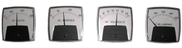

This condition suggests that there is a suspected failure in the secondary current metering system. This condition is very unlikely to be related to the precipitator. It is more likely to be related to the performance of the electrical equipment. It is quite possible at this stage to assume that this is probably affecting the performance of the Precipitator. Potential side effects are:
The secondary current measured on the system may be displayed in two locations. You may have one or both of the following: